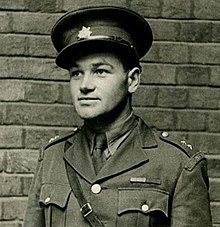

| Portrét | Základní údaje | Významné činy | |
|---|---|---|---|
|  | Jan Kubiš | Byl součástí operace Anthropoid |
|
| 24. června 1913 | 18. června 1942 (28) | ||
| Jan Kubiš (24 June 1913 – 18 June 1942) was a Czech soldier, one of a team of Czechoslovak British-trained paratroopers sent to eliminate acting Reichsprotektor (Realm-Protector) of Bohemia and Moravia, SS-Obergruppenführer Reinhard Heydrich, in 1942 as part of Operation Anthropoid. During the attack, Kubiš threw the bomb that mortally wounded Heydrich | |||
| Jan Kubiš | |||
| Odkaz na Wikipedii | |||